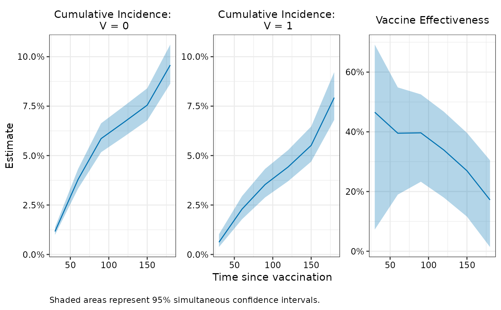

Add simultaneous confidence intervals to vaccine effectiveness fit
Source:R/add_simultaneous_ci.R
add_simultaneous_ci.RdComputes simultaneous confidence intervals, which maintain the specified coverage level across all evaluation timepoints jointly. This is useful for making inferences about the entire VE curve.
Arguments
- object
An object of class
vefitcreated bynomatchVE()ormatching_ve(). Mustcontain evaluations at multiple timepoints (
length(object$eval_times) > 0),contain bootstrap samples (
keep_boot_samples = TRUEwhen fitting).
- seed
Integer seed for random number generation to ensure reproducible critical values for simultaneous confidence intervals. Default is
NULL(no seed set).
Value
The input vefit object with the following modifications:
- estimates
Each matrix gets additional columns describing the simultaneous confidence interval bounds and construction:
simul_lower,simul_upper,simul_n- simul_z_star
Critical values used for each term (cuminc_0, cuminc_1, ve)
- simul_excluded_timepoints
Timepoints excluded from simultaneous bands due to insufficient bootstrap samples
Details
Critical values are computed using the bootstrap covariance structure across timepoints. If any timepoint has more than 5% missing bootstrap samples, it is excluded from the simultaneous band and a warning is issued.
Examples
# Fit model with bootstrap samples
fit <- nomatchVE(
data = simdata,
outcome_time = "Y",
outcome_status = "event",
exposure = "V",
exposure_time = "D_obs",
covariates = c("x1", "x2"),
eval_times = seq(30, 180, by = 30),
tau = 14,
boot_reps = 100,
keep_boot_samples = TRUE
)
#> Bootstrapping 100 samples...
#> Time difference of 34.83014 secs
# Add simultaneous CIs
fit_simul <- add_simultaneous_ci(fit, seed = 123)
# Look at results
fit_simul$estimates
#> $cuminc_0
#> estimate wald_lower wald_upper wald_n simul_lower simul_upper simul_n
#> 30 0.01163891 0.01017118 0.01331560 100 0.009895009 0.01368592 100
#> 60 0.03790915 0.03400866 0.04223743 100 0.033261760 0.04317687 100
#> 90 0.05857293 0.05279345 0.06494174 100 0.051682224 0.06631812 100
#> 120 0.06691947 0.06077506 0.07363638 100 0.059587887 0.07508110 100
#> 150 0.07548793 0.06902192 0.08250600 100 0.067767137 0.08400909 100
#> 180 0.09576440 0.08786829 0.10428896 100 0.086331163 0.10610869 100
#>
#> $cuminc_1
#> estimate wald_lower wald_upper wald_n simul_lower simul_upper simul_n
#> 30 0.006219935 0.004207387 0.009186278 100 0.003774896 0.01023239 100
#> 60 0.022925618 0.018798880 0.027932470 100 0.017790314 0.02949875 100
#> 90 0.035346676 0.030136494 0.041419157 100 0.028829366 0.04327167 100
#> 120 0.044244807 0.038495240 0.050807739 100 0.037033087 0.05278394 100
#> 150 0.055146409 0.048610025 0.062503971 100 0.046932711 0.06470000 100
#> 180 0.079293545 0.070374259 0.089234758 100 0.068071437 0.09218270 100
#>
#> $vaccine_effectiveness
#> estimate wald_lower wald_upper wald_n simul_lower simul_upper simul_n
#> 30 0.4655914 0.17359894 0.6544141 100 0.07259919 0.6920506 100
#> 60 0.3952484 0.23778801 0.5201801 100 0.18967576 0.5486689 100
#> 90 0.3965357 0.27036989 0.5008852 100 0.23279397 0.5253306 100
#> 120 0.3388351 0.21576468 0.4425920 100 0.17954198 0.4672012 100
#> 150 0.2694672 0.15054485 0.3717406 100 0.11597176 0.3963109 100
#> 180 0.1719935 0.04951339 0.2786908 100 0.01418941 0.3045371 100
#>
# Visualize
plot(fit_simul, ci_type = "simul")
